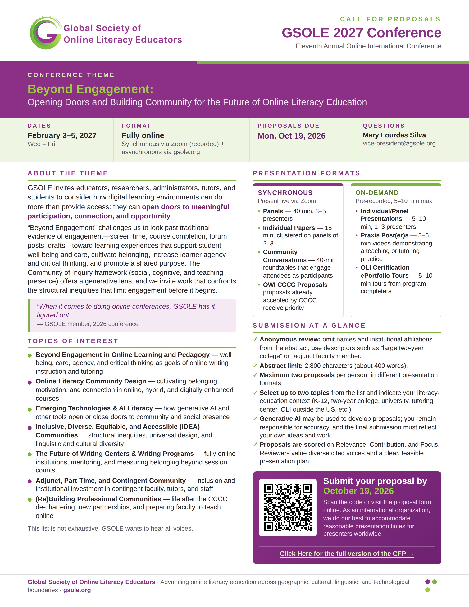
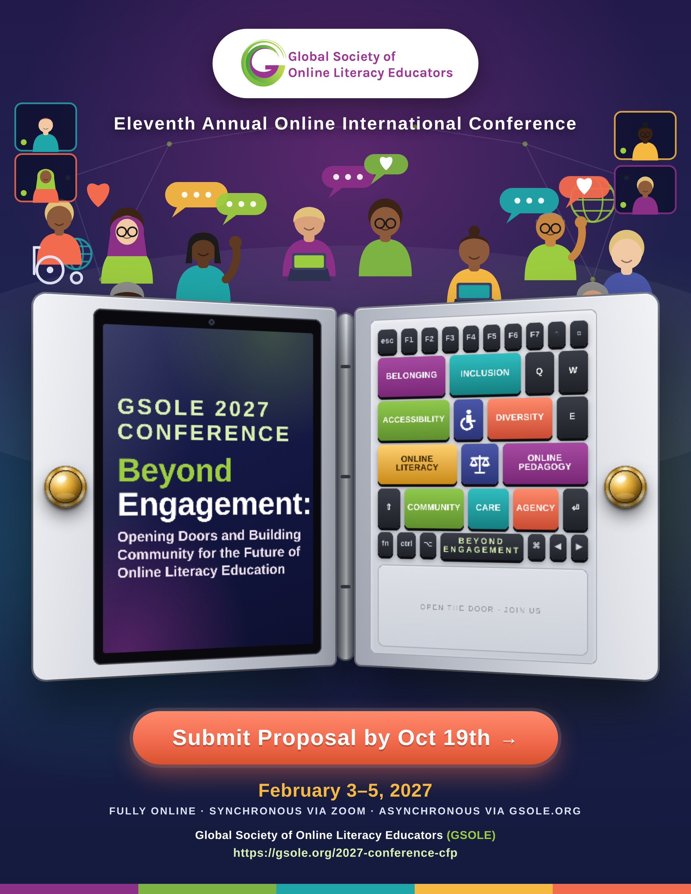

Issue No. 24
October 2026
President’s Message
Dear GSOLE Members,
Happy Fall! 🍂
Fall 2026 is here. Leaves are turning. Both the Fall 2026 semester and the Fall 2026 quarter have begun. And I am sitting here in Starbucks composing this message taking in wafts of pumpkin spice.
After listening to the visions of the executive board members at the August 2026 Executive Board meeting, we are in the process of creating three ad hoc committees:
Cat Mahaffey (University of North Carolina, Charlotte) and Trent Kays (Augusta University) have agreed to co-chair Digital Initiatives, while the other two have members and are organizing their leadership. Rather than micromanaging these groups, I have asked these content experts to develop their own charges for the next year and present them to the executive board in October or November. Over the next few weeks, each of these committees will choose their leadership, recruit members, and develop these charges for the year. If you are interested in any of the work that these ad hoc committees are doing, please reach out to me (kdepew@odu.edu), and I will get you in touch with committee members. Also if you have a vision for GSOLE, especially in the absence of CCCC, please contact me, and we can discuss making it part of GSOLE’s work.
Fall is also one of the most exciting times of the year in the organization because we learn who the plenary speakers at the upcoming GSOLE conference will be. I am excited to announce that the conference co-chairs, Mary Lourdes Silva (Ithaca College) and Ann Marie Ade (Embry Riddle Aeronautical University), with the help of Brian Harrell (Northeast Ohio Medical University and others) have recruited some amazing plenary speakers for the 2026 conference: Kofi J. Adisa (Howard Community College), Amy Cicchino (University of Central Florida) and Jessie Borgman (Arizona State University). If you saw Kofi speak at the 2026 meeting of the CCCC, then you know why you will not want to miss his plenary speech in February. I am sure they will all impart us with their reflections on the current state of writing studies and their visions for the future–especially as it relates to online writing instruction. The conference committee is also accepting proposals, so please submit what you are thinking about with the administration and teaching of your online literacy classes. And please share the CFP (https://gsole.org/2027-conference-cfp) with your colleagues.
Upcoming Event
“Beyond Engagement”
GSOLE invites educators, researchers, administrators, tutors, and students to consider how digital learning environments can do more than provide access: they can open doors to meaningful participation, connection, and opportunity.
“Beyond Engagement” challenges us to look past traditional evidence of engagement—screen time, course completion, forum posts, drafts—toward learning experiences that support student well-being and care, cultivate belonging, increase learner agency and critical thinking, and promote a shared purpose. The Community of Inquiry framework (social, cognitive, and teaching presence) offers a generative lens, and we invite work that confronts the structural inequities that limit engagement before it begins.

Conference Flyer 1 (gsole-2027-conference-flyer-1.jpg)

Conference Flyer 2 (gsole-2027-conference-flyer-2.jpg)
Call for Papers
GSOLE has an affiliate relationship with the Association for Writing Across the Curriculum (AWAC) and seeks members to represent our organization at the 2027 International Writing Across the Curriculum (IWAC) Conference, July 7-10, 2027, hosted by the University of Maine’s Department of English. The call for proposals is out now and will close on October 15th.
If you are planning to attend IWAC 2027 and would like to help represent GSOLE (including but not limited to potential participation in a sponsored panel), please contact Meghan Velez and Janine Morris, Affiliates Co-Chairs, at affiliates@gsole.org.
GSOLE Webinar Series
Over the past fifteen years, research has shown that social annotation (SA) supports student learning (e.g. Johnson et al. 2010; Zhu et al. 2020). Specifically, it is the collaborative, student-centered quality of SA that creates deeper engagement with reading, where students co-create knowledge through threaded conversations in the margins. Most recently, researchers have connected the active and representational qualities of SA to social justice, where students express power through dialoguing with the text to share knowledge that may historically have been marginalized (Clinton-Lisell 2023).
But even though SA may present opportunities for deeper learning as well as social and representational justice, it can also become a space that “exacerbates inequalities” (Clinton-Lisell 2023). As Maha Bali has observed, annotation isn’t neutral: “It is always fraught with presence, authority, relevance—and time” (Bali et al. 2022). These concerns connected to something that some of the presenters had noted in their previous research, namely that the conversations in the margins differed across campuses and institution types. We published on the successful learning outcomes we had observed, but simultaneously expressed the hope that we might one day invite our students to read together cross-institutionally to create a more diverse academic community for peer-to-peer learning (Traester et al. 2021, 347).
This webinar presents the results of that project, which we brought to life in Fall 2024. The pilot included 226 students at three types of institutions in the U.S.: a community college, a state college, as well as one private university in the U.A.E. We will discuss how bringing readers from across diverse educational, linguistic, and cultural backgrounds together can expand students’ understanding of both texts and of themselves as readers. For example, we have all heard a student say: “I’m not a good reader,” or avoid deep reading engagement by “deferent” reading, which reproduces the author’s ideas in paraphrase. But we found that most of our student annotations shed the deferent stance by supplying their own knowledge, perspectives, and experiences, showing students inhabiting active authorial identities by questioning the author’s argument and evidence.
The webinar concludes with discussion of limitations of our project that may make it difficult to scale or replicate by other researchers. For instance, finding other instructors to collaborate with cross-institutionally, choosing readings to assign, and coordinating due dates across different time zones and academic calendars could pose challenges. We suggest potential benefits to annotating with other instructors at one’s home institution.
In the interactive closing of our webinar, we invite participants to troubleshoot the potential benefits and limitations of this approach. Could a project like this be feasible at your campus? What might that look like?
Leadership Opportunity
GSOLE has created an archivist position to help organize and store its content for efficient future retrieval. This is a great position for anyone who wants to apply the archival research methods they have studied. The job description is as follows:
As an organization that operates predominantly virtually, GSOLE has generated a lot of online artifacts associated with its daily operations, and the resources it provides on the Online Literacy Educator community (e.g., conference, webinars, publications, certification course). As a result, we are looking for a head archivist who will take on the following responsibilities…
If you are interested in this position or you know someone who might be interested, please have them contact me at kdepew@odu.edu.
Publishing Opportunities
Consider publishing in one of GSOLE’s three Online Literacy Open Resource (OLOR) journals:
External Call for Papers
The Education Association of South Africa (EASA) invites academics, researchers, practitioners and scholars to submit abstracts for the EASA Annual Conference 2027, taking place 17–20 January 2027 at the Boardwalk Sun International, Gqeberha, South Africa.
The conference offers a dynamic platform to share research, exchange ideas and build scholarly collaborations around contemporary and emerging issues in education, including AI and human-centred education, digital futures in Africa, innovation and inclusion, early childhood education, communities of practice, engaged scholarship, educational leadership, social justice and transformative pedagogies.
Abstract submissions are now open! Abstracts should be 200–300 words, with opportunities for oral papers, symposia, workshops, roundtable discussions and poster presentations.
Share your research. Connect with fellow scholars. Contribute to conversations shaping the future of education.
Employment Opportunities
The School of Applied Sciences and Arts invites applications to join our teaching pool for English composition for the 2026-2027 academic year. We are especially interested in candidates who have experience in online writing instruction and understand the unique challenges of teaching writing in digitally mediated environments. The successful candidate(s) will teach undergraduate courses in composition in the online Writers’ Studio; provide timely feedback on student assignments; attend curriculum training sessions; assess student work; and respond to student emails and messages regarding class assignments. Faculty Associate positions are one ASU academic session, non-benefits-eligible, fixed-term appointments with no tenure implications, not to exceed an average of .40 FTE per semester. The number of courses is contingent upon unit needs, funding, and sufficient enrollment. (see more at https://apply.interfolio.com/184494)